正文共计5300字左右
预计阅读时间10min
转载请在后台回复“授权”
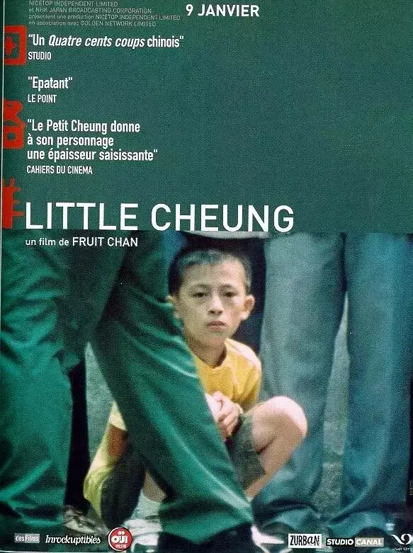
第一次看到《细路祥》的海报时，我就被它吸引了。
海报里的剧照有一种独特的气质，那是一种有别于香港主流商业电影的真实感，让人过目难忘。
前景和背景的冷色调散发着一种寒意，夹在冷色中间的是蹲在地上的小孩，暖黄色的上衣、迷茫的表情、卑微的姿态，都让人印象深刻，似乎在诉说着一种难言的苦楚。
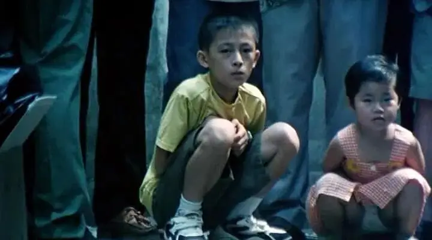
大学时迫不及待地看完后，有一种很复杂的感受，但很多东西又看不懂，所以说不出个所以然。
多年以后再次翻出来，才发现原来我与《细路祥》隔着的是那近百年的香港史。
即使我看了那么多香港电影，但却被香港电影五彩缤纷的商业“外衣”蒙蔽了双眼，我依旧不懂香港。
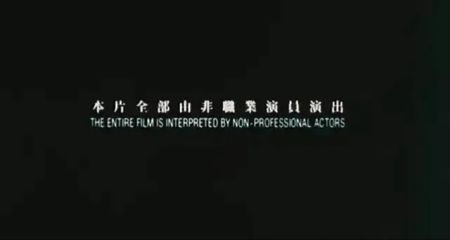
所以《细路祥》显得更加珍贵，它继承了当年意大利新现实主义运动的写实精神，启用非职业演员，非常真实地记录了港人在香港回归前夕的心路历程。
爱同胞，就要先试着去了解他们，而《细路祥》就是一个好的开始。
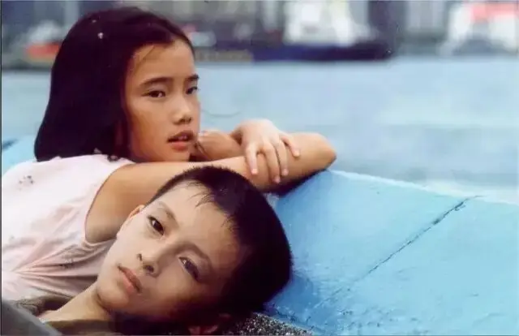
细路是一个粤语方言，就是小屁孩的意思。
所以电影的主角就是一个九岁的孩子。
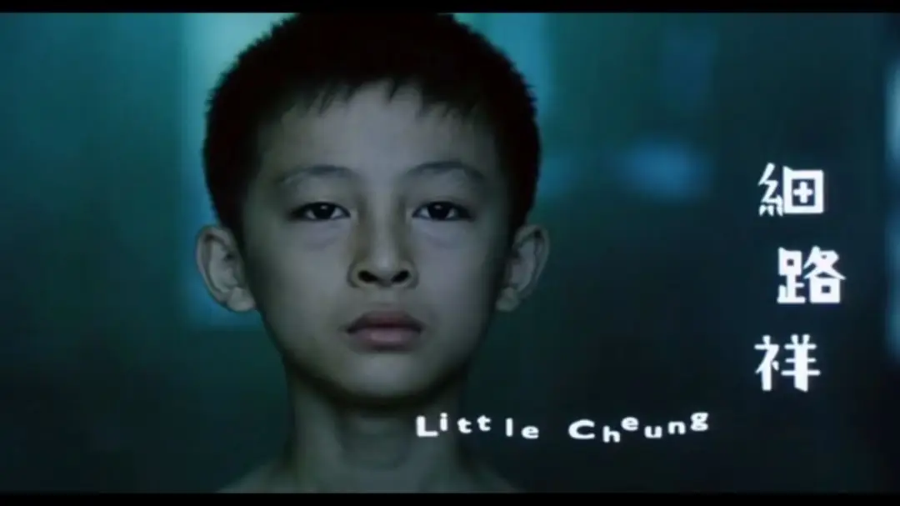
细路祥的家庭有五个成员。
爸爸开了一个茶餐厅，整日为赚钱忙的不得了。
妈妈则整天泡在麻将馆。
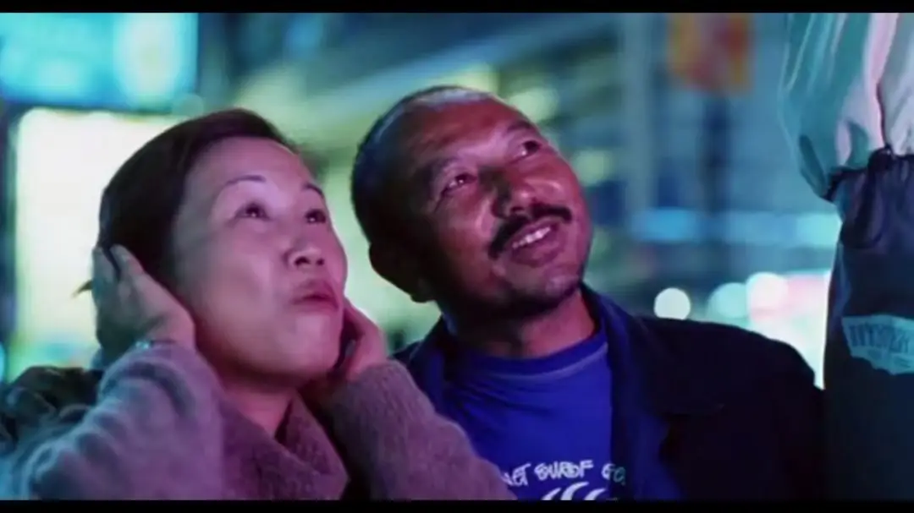
外婆对细路祥最好，会和他讲起很多过去的故事，她总是念叨着那个细路祥素未谋面、据说因混黑社会而被爸爸赶走的哥哥。
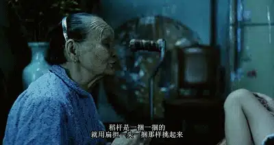
家中还有一个菲佣，她一直非常照顾细路祥，以至于细路祥和她的关系要比和爸妈的关系都要亲。
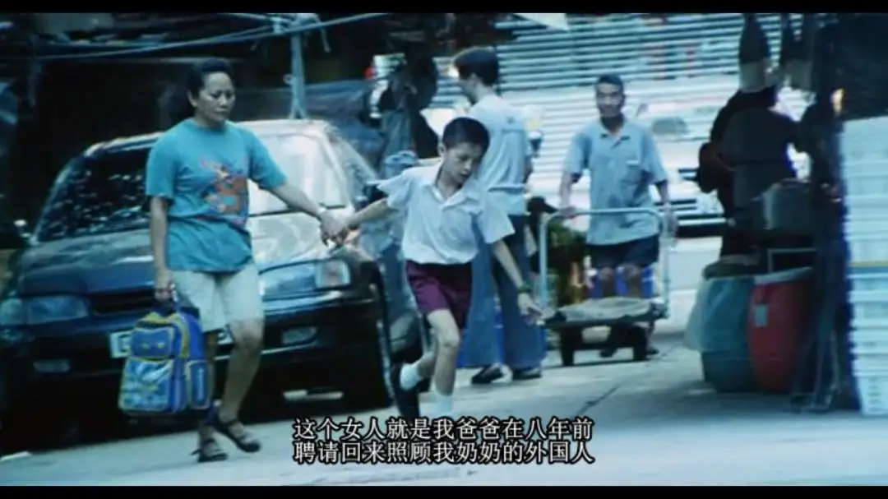
细路祥则常常帮爸爸的茶餐厅送外卖。
他骑着自行车穿行在逼仄的老街，见了形形色色的人和事。
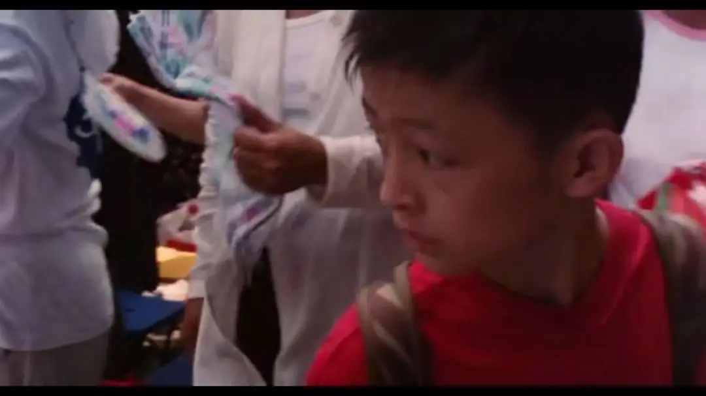
细路祥发现，钱在所有人心中，是一个梦，一个理想，甚至是一个将来。
爸爸开餐厅是为了钱，妈妈去麻将馆为了钱，菲佣照顾家人起居是为了钱，黑社会大伟整天嚣张跋扈也是为了收保护费.....
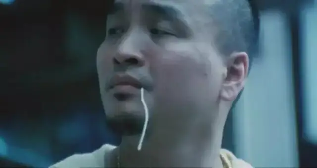
总之，整条街的人为了赚钱都很努力，自然细路祥也成为其中一员，总是会想办法从客人那里讨要小费。
细路祥自认为他是整条街最懂得赚钱的孩子，可有一天，他发现一个叫阿芬的女孩比自己还拼，她竟然整日不上学，四处打零工。
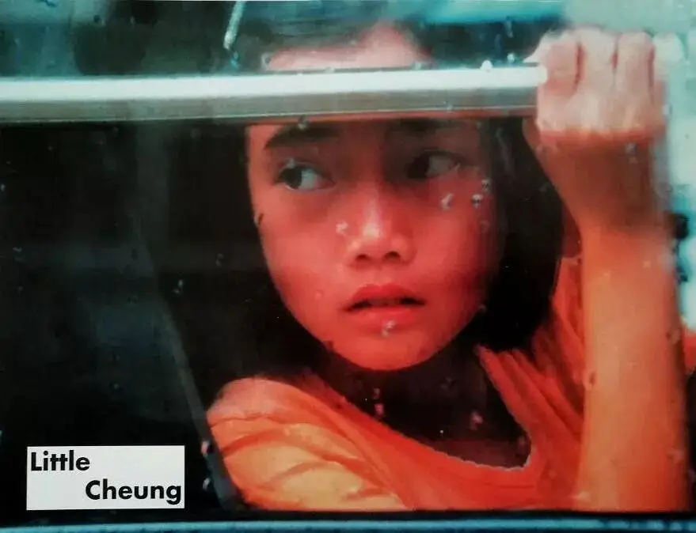
既然是同路人，细路祥自然对阿芬很有兴趣。
最终，细路祥和阿芬一起搭伙送外卖，共享服务小费。
他们骑着单车一起送外卖，一起在旧货车里看破帆布里的“星空”，一起在维多利亚港对着大海呼喊，一起过生日。
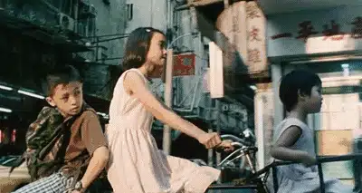
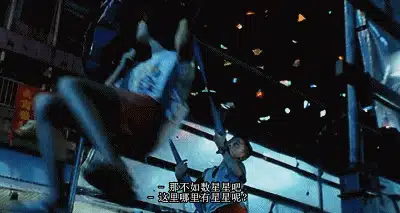
细路祥和阿芬成为了最亲密的伙伴。
可好景不长，随着97渐近，外婆去世，菲佣离开了香港，阿芬则被遣送回大陆。
只剩下孤零零的细路祥迷茫地望向未来。
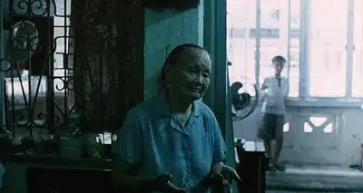
就这样，细路祥和阿芬的童年终结于香港回归的97年.....
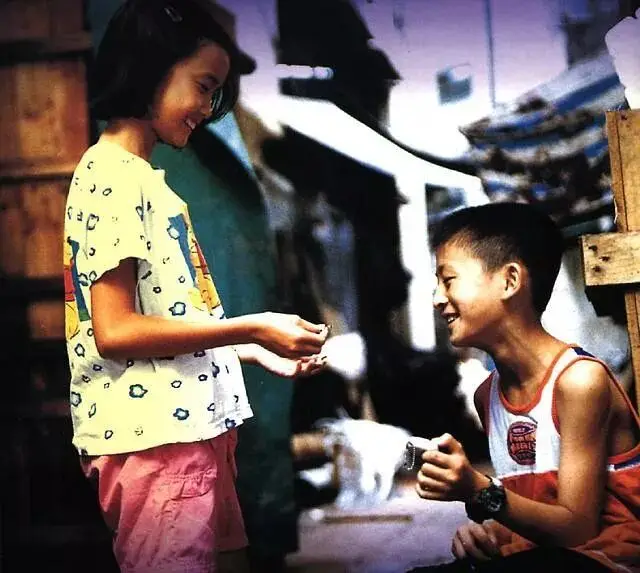
- 01 - 97下的底层众生
毫无疑问，这是一部关于“97”的电影。
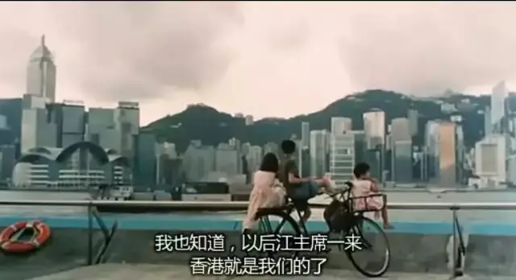
要把这个敏感、复杂的题材拍好并不容易，《细路祥》则比较巧妙，通过小孩子的眼睛来审视这一切。
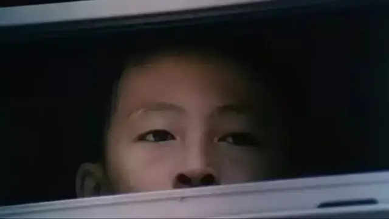
我们可以跟着细路祥骑着自行车穿行在茶餐厅、酒楼、棺材铺、报纸档、武馆、一楼一、飞发铺、密斗货车等地方。
而这些全都是香港底层众生，也是我们对于香港很陌生的一面。
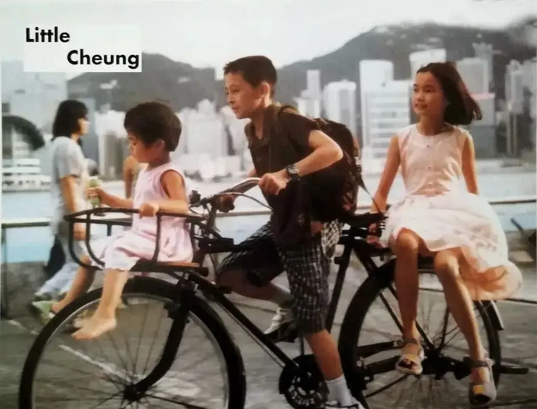
首先是逼仄的生存空间，不论是街道、店铺还是家庭内景都不像主流港片中那样高大上，甚至有些杂乱、压抑，不过整个社区里街坊邻居的关系都比较好。
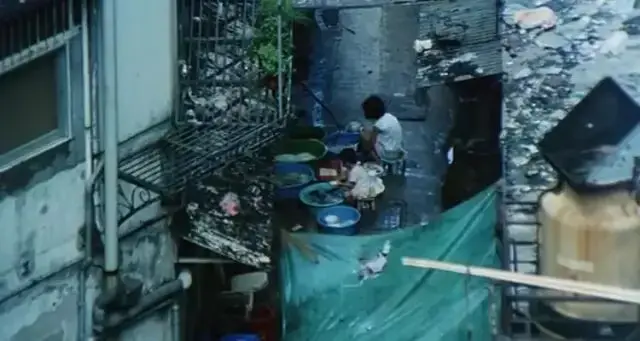
其次呈现出来的就是香港作为移民城市的百态。
比如一楼一凤，这是香港性工作者一种提供性服务的方式（妓女在香港常被称为“凤姐”）
在香港，性交易并没有被禁止，但香港禁止组织或操控卖淫活动，所以设立及经营妓院都是违法。
1980年代后期香港修订相关法例，只要证明一个处所内有超过一人提供性服务即可将该处视为卖淫场所，任何人管理、出租或租赁卖淫场所都可被检控。
因此，香港便逐渐形成“一楼一凤”的景况，而在香港提供一楼一服务的妓女主要是来自大陆的新移民女子，以及持双程证来港（有访港期限）的女子。
从《细路祥》中的“凤姐”被黑社会欺负，我们便可以窥见这些群体弱势的生存状态。
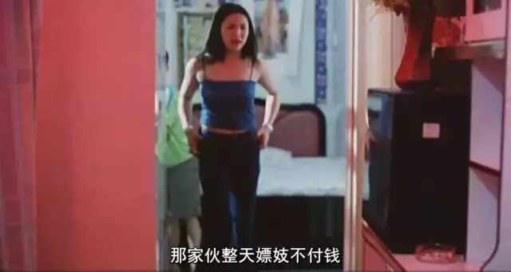
除了一楼一凤，电影中还记录了另一个特殊的新移民群体，就是像阿芬一样的小人蛇。
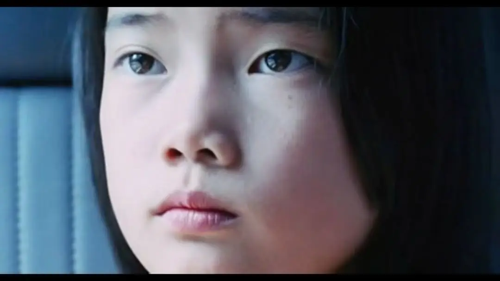
上世纪80年代，香港有一波亲属移民潮，即香港人在大陆的家属可以移民到香港，因此，很多香港人在大陆的妻子以及孩子都想要借着这个机会移民香港。
但是香港资源有限，一下子没有办法接纳大量移民，所以采用每年派发名额的方式开展，当时很多人等不及，又担心政策有变，所以纷纷选择偷渡。
当时有大量小孩偷渡到香港，他们被称为小人蛇，一旦被抓，会被遣返大陆。
电影中，阿芬的香港人父亲是是跛子，阿芬与妹妹、母亲偷渡来港投靠父亲。
来到香港后，她们没有办法上学，天天藏在后巷洗碗，过着见不了光的生活。
并且为了生计，还必须要四处打零工。
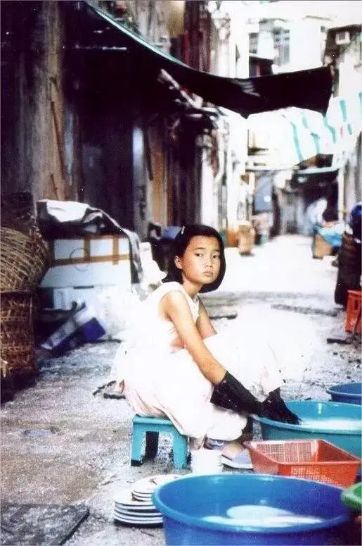
电影最后，阿芬被发现遭到遣送，小人蛇以及关于他们权力的争议一直存在并持续到现在。
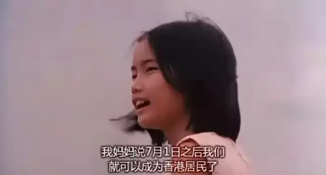
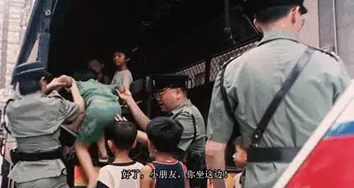
还有一个移民群体就是菲佣。
上世纪菲律宾国内经济不景气，大量菲佣出走国门寻找出路，而当时经济发达的香港自然成为菲佣梦想的天堂。
起初，菲佣主要是香港上流家庭的雇佣对象，后来随着女权主义流行以及香港生活成本的升高，很多家庭妇女纷纷外出工作，自然很多香港中产家庭开始雇佣菲佣操持家务。
因此，十多万人的菲佣成为了香港社会的重要组成部分。
可那么多的港片中，我们却很少看到菲佣的影子，可见菲佣在香港社会的弱势地位。
她们漂泊异乡，在周日的休息日会自发聚在一起聊天、分享食物，今天如果你在星期天来到香港中环，会看到密密麻麻的菲佣席地而坐，互相倾诉。
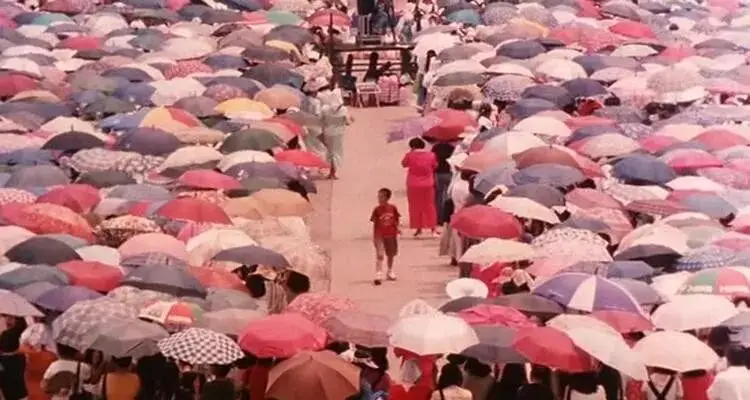
而当你第二天再来，会发现地面上却没有一片垃圾，可见菲佣的素质和教养。
而中环大片的公共区域也成为香港政府给予菲佣的特殊福利。
电影中便再现了这一景况，当细路祥骑着自行车追阿芬时，他经过皇后像广场，当时菲佣们正在露天礼拜，很多人举起手，一边流着眼泪，一边唱着赞美诗，她们心中的委屈只有上帝知道。
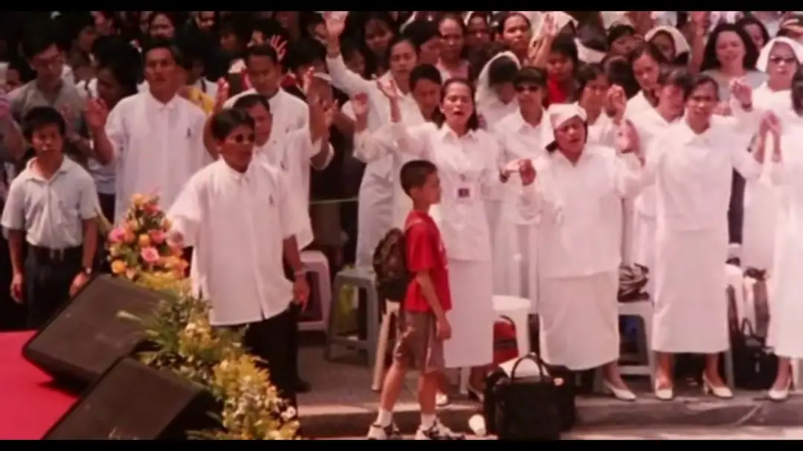
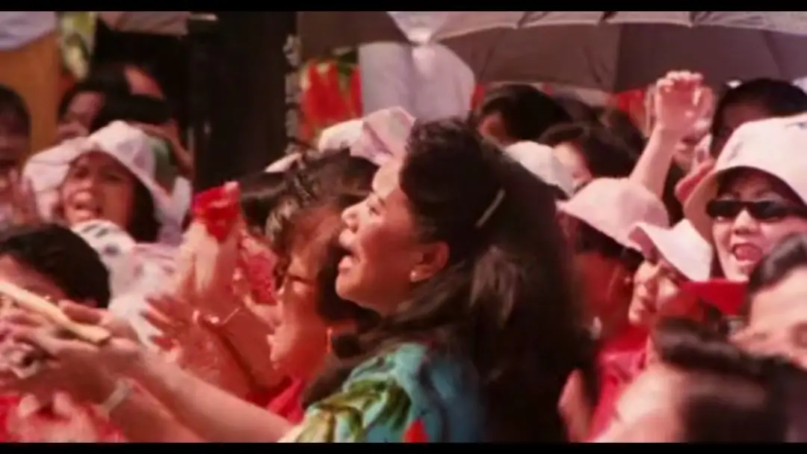
细路祥家里的菲佣就是其中的一个，她为了家庭在香港做佣人赚钱，可国内的丈夫却出轨其他的女人，这让她痛苦不已，并最终决定离开香港。
除了这些悲惨的新移民，《细路祥》里的港人也都是苦苦打拼才能撑得起整个家。
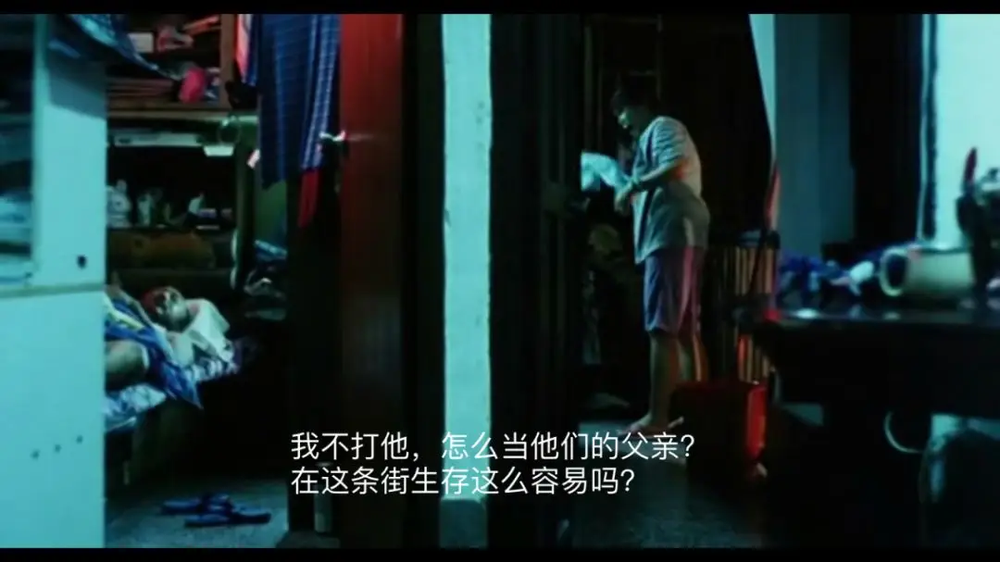
所以，对于97香港回归，当时大陆举国欢腾、热泪盈眶。
可香港却并非如此。
香港回归像是飘来的一阵云，他们不知道将要来的是雨露的滋润，还是暴雨和雷电。
富人可以考虑移民，中产也会有很多焦虑，而像细路祥一家的底层港人则是贫贱不能移。
对于未来他们也不会有过多幻想，把当下的日子过好才是最重要的。
所以，97这件大事并不是底层港人整天挂在口上的话题，而是一种笼罩在心头的情绪。
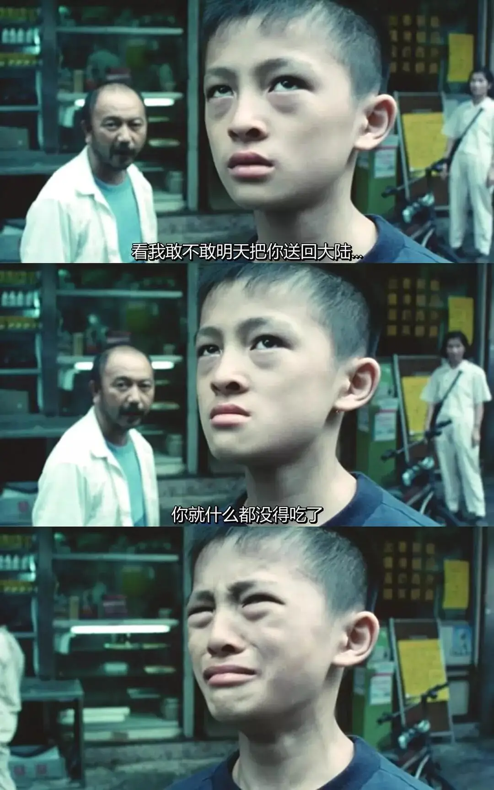
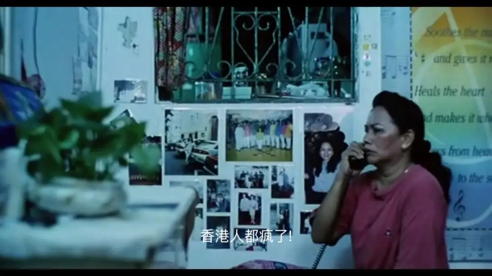
导演陈果通过细路祥很精准地将这份情绪传递出来。
97回归前夕，养母菲佣（代表香港）离开了香港，坚叔的二儿子移民国外（中产、富人），外婆去世（旧香港）。
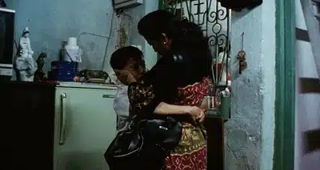
空荡荡的房间里只留下细路祥一个人，当他看到阿芬（代表大陆）被遣返后，他骑着自行车拼命追警车要和阿芬告别。
但细路祥却追错了车，当他拼尽全力追到警车后，迎接他的不是阿芬，而是躺在病床上的黑社会大伟。
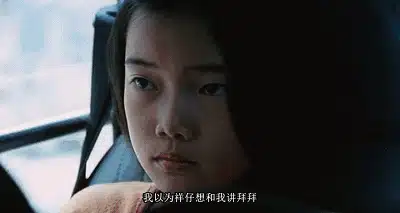
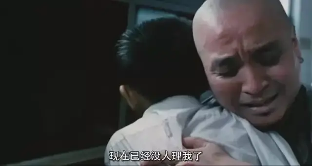
最后，细路祥气喘吁吁、一脸茫然，这就是普通港人面对97时的复杂情绪，有期待、有恐惧，更有说不出来的苦楚。
-02- 逝去日子
这是一部香港独立作品，电影故事性不强，没有美丽的外表，也没有惊天动地、煽人泪下的故事，但却有着非常丰满的细节和对香港饱含的深情。
除了很真实全面地呈现出了97年港人的状态，更是在电影中对过去做了一场深情的告别。
要看懂这一点，我们需要很熟悉中国电影史。
电影刚开始细路祥站在前面，背景后面是一台电视机，电视机中播放的是新马师曾邓永祥的粤剧电影《万恶淫为首》。
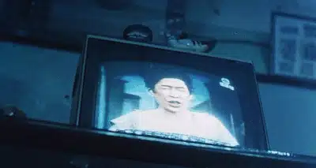
细路祥接着告诉观众，因为外婆是邓永祥的铁杆粉丝，所以细路祥从一出生就是听着邓永祥的粤剧长大的，而他的名字的也是来自于此。
邓永祥是谁？
也许我们很多九零后、零零后听都没有听过，但他却是上一辈香港人中家喻户晓的粤剧演员、电影明星。
如果没有邓永祥背后的粤剧电影，恐怕也难有后来辉煌的香港电影。
世界电影史的起点是卢米埃尔兄弟的现实主义作品《火车进站》。
而中国电影史的起点则是戏剧艺术。
1905年，著名京剧老生、慈嬉的御用演员谭鑫培，他在摄影机面前表演了几场拿手好戏，于是有了中国第一部国产电影《定军山》。
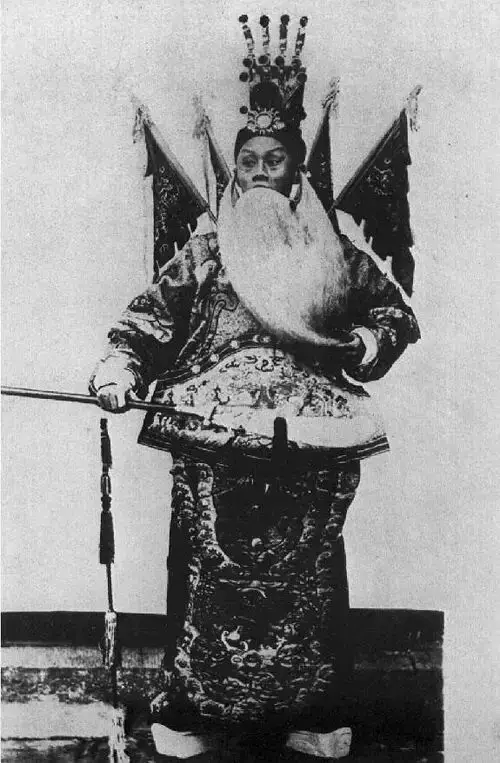
1913年黎明伟的粤剧电影《庄子试妻》同样也开辟了香港电影史的发展历程，《庄子试妻》也是中国第一部运到海外放映的电影。
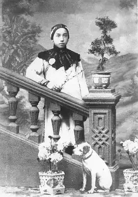
更有意思的是，1905年到1913年因为受男尊女卑等传统观念影响，8年时间里竟没有一个女演员，凡是女角一律由演戏剧的男演员扮演。
而《庄子试妻》出现了中国第一个女性演员，可见香港电影从诞生起，就充满了创新和勇气。
接下来二十年是中国的黄金默片时代，上海成为中国电影的中心，《神女》、《难兄难弟》、《新女性》等佳作相继诞生，阮玲玉、王汉伦、宣景琳、胡蝶、黎莉莉、王人美、陈燕燕红极上海乃至全国。
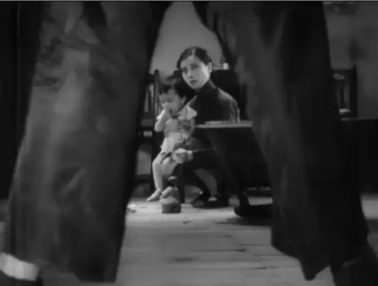
同时期的香港和上海在电影艺术发展上交流不断，香港电影人北上、上海电影人南下很普遍。
尤其是在抗日战争爆发后，香港相对太平的局势吸引了各地大量优秀电影人才及资本。
所以今日很多我们耳熟能详的香港电影名片，如果去追本溯源都来自于大陆。
比如说第一次武侠片热潮并不是来自香港，而是发生在1920年代的上海，当时《火烧红莲寺》万人空巷，引来观影狂潮。
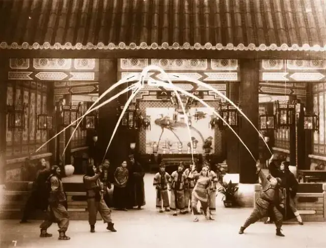
但之后因为政治原因，《火烧红莲寺》被禁，于是武侠片的火种流向了自由港，当时在香港拍的续集再次引爆了观影热潮，极大地推动了香港武侠电影的发展。
再比如缔造无数神剧的tvb，其创始人之一的邵逸夫最初起步于上海，在上世纪三十年代才南下香港寻求更好的发展。
金庸也是生于大陆、长于大陆、学于大陆，最后在香港落地生根写就武侠经典。
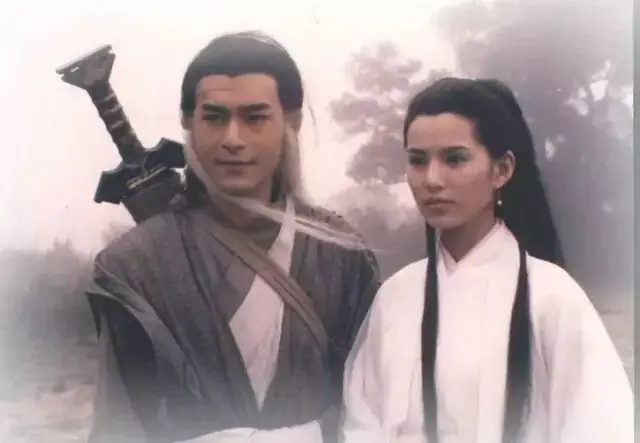
因此，香港电影人对30年代的旧上海有着极其特别的情结，所以后来才会有很多我们熟悉的《上海滩》、《阮玲玉》、《胭脂扣》、《上海滩赌圣》等以旧上海为背景的作品。
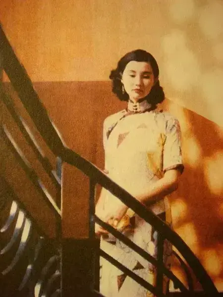
1933年，邵氏兄弟的电影公司拍摄了粤剧电影《白金龙》，它被视为香港第一部有声电影，这部电影的票房获得极大成功，推进了香港粤剧电影的热潮。
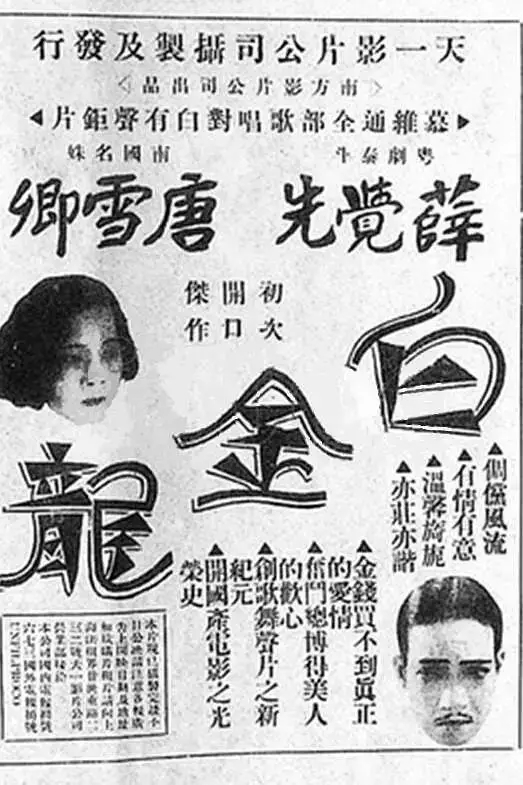
从1930年代一直到1950年代，香港粤剧电影拍摄了近千部，这个过程为香港培养了大批优秀电影人才，比如南海十三郎、谢贤、吕奇、萧芳芳、陈宝珠......
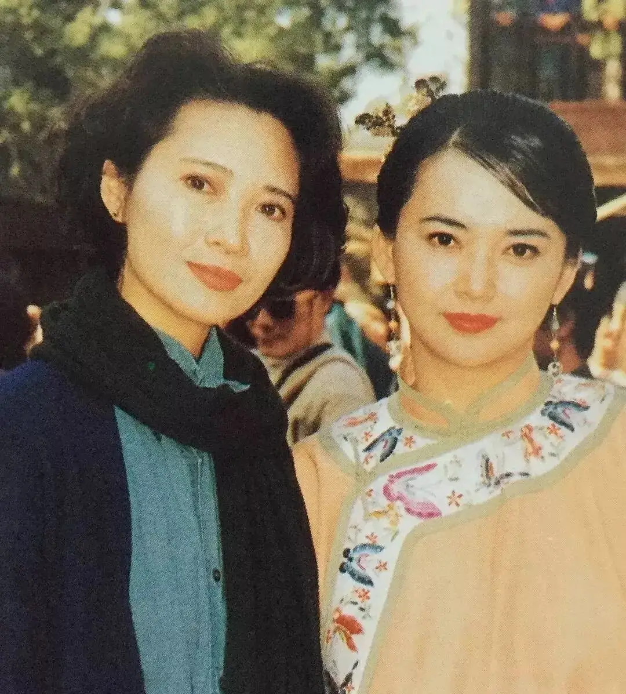
香港也逐渐取代上海成为中国电影的中心。
而《细路祥》中的邓永祥就是香港粤剧电影中的佼佼者，他代表的那个时代的香港电影。
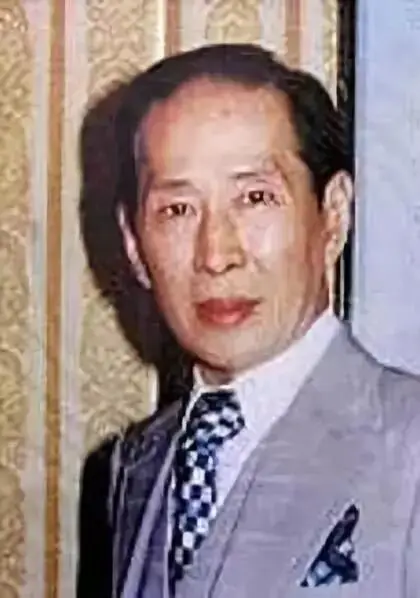
在《细路祥》快要结束的时候，电视上又出现了另一个细路祥，他就是我们熟悉的李小龙。
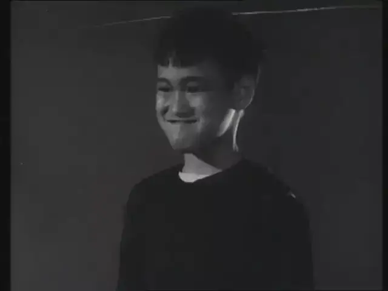
这是香港1950年的同名电影《细路祥》，10岁的李小龙首次以男主角身份演出，而他的艺名“李小龙”也是在本片中首次使用。
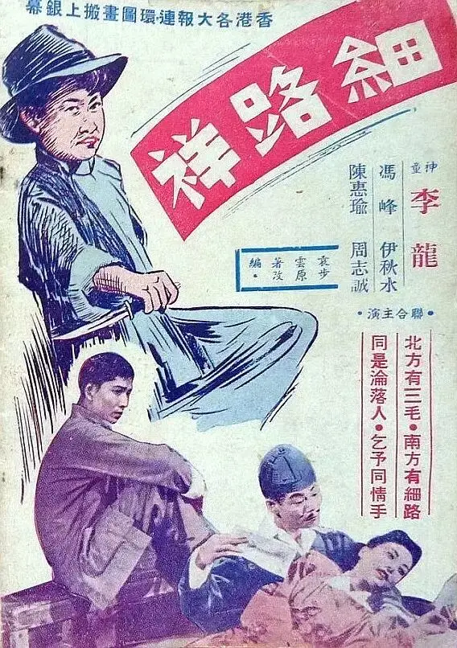
李小龙作为香港武打片的重要代表，他代表了1970年代的香港电影。
这些就是陈果《细路祥》里的过去，它就像个老父亲一样，如果我们曾经和他朝夕相对过，那光是这个渐行渐远的背影就会让人落泪。
97回归前夕，邓永祥去世，外婆去世，一个旧时代消逝在时光中。
时间是最大的艺术，这种感觉就像是六十年后我们无意中看到《大话西游》一样，一定是百感交集。
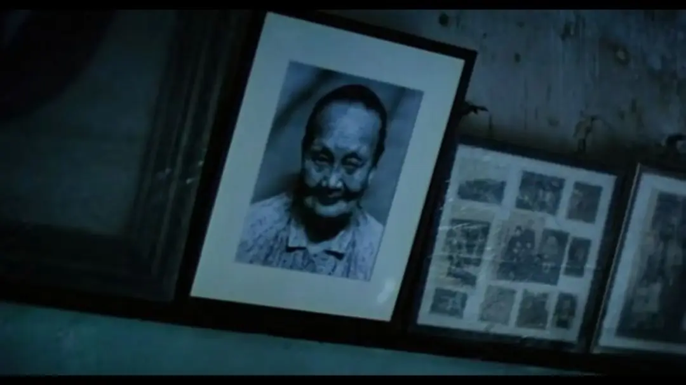
-03- 22年后，细路祥长大了
《细路祥》里有一个场景让我印象深刻。
细路祥一直想要寻找被爸爸赶走的哥哥，可爸爸因为哥哥是黑社会而对他恨之入骨
细路祥的诉求让爸爸非常愤怒。
他当街脱了细路祥的裤子，并对他进行了体罚。
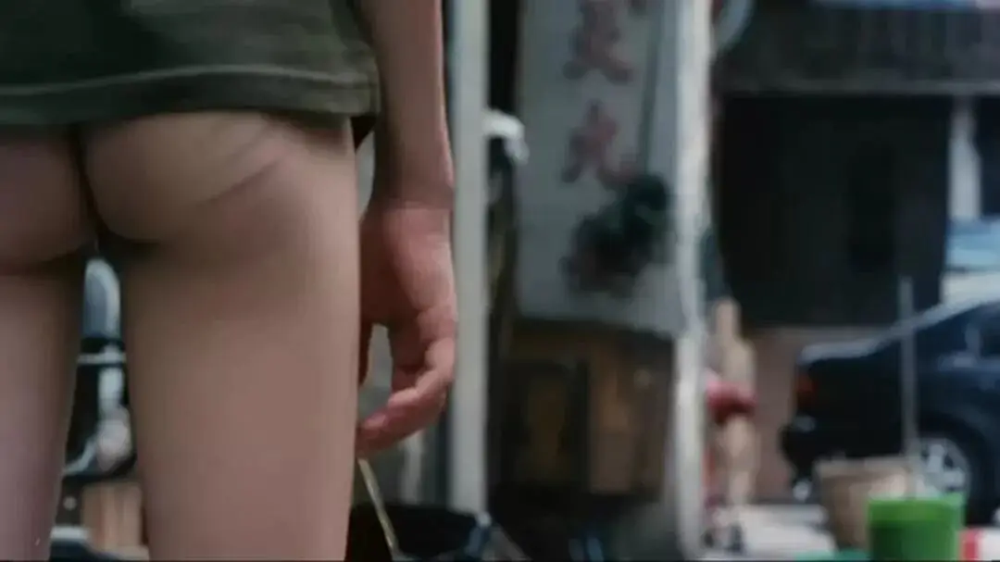
细路祥悲愤之余，光着屁股站在石柱上唱起了邓永祥的《万恶淫为首》：
冷得我浑身发抖！真是痛到入心......我还在发抖，好似脚软难行.....我的心都碎了，我有幸逃脱，却不幸成为了盲人。
好心了，大哥，施舍一下了，大哥。
正是人逢绝境都一定绝望，我自己这样的身世，都本想去轻生，一个人生生死死，本是不值一提，但我心头仍挂我有一位老父亲流落在外，我记得临行前他对我说“不要记恨母亲（大陆）的背叛”......
从小看着这个粤剧长大，现在细路祥竟然可以用它来表达自己心中的愤懑。
这就是一种传承，外婆和邓永祥代表的旧香港虽然过去了，但是过去的精神一直在延续。
细路祥的身上有着百年中国的影子，燃烧着中华民族百年坎坷史保留下来的火种。
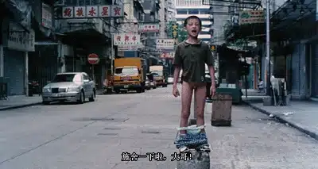
《万恶淫为首》讲的是家庭不和的故事，这也影射着香港和大陆的关系。
养子重新回来，不论这个桀骜不驯的孩子让我们多么不习惯，甚至有些看不顺眼，但他是我们的家人，是我们的同胞。
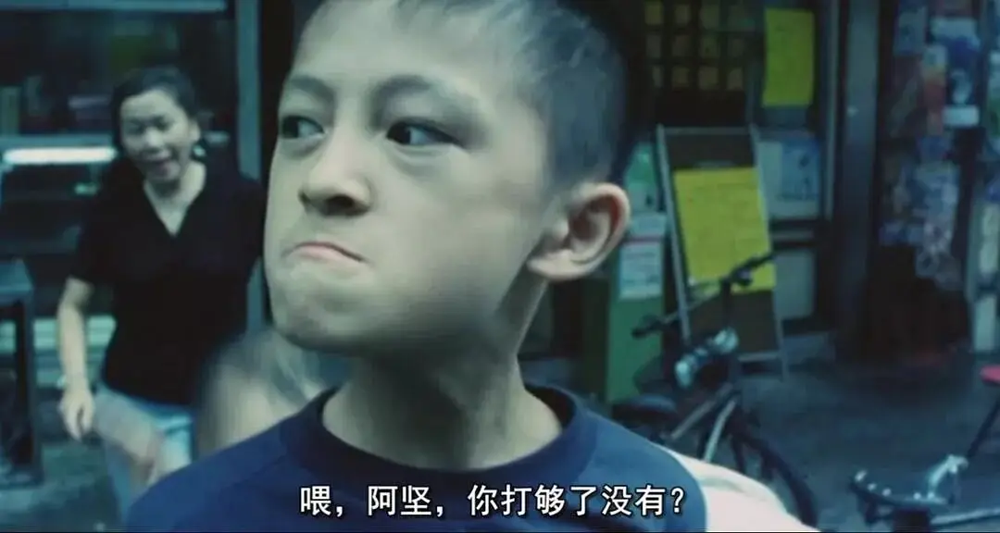
他们在我们危难的时候屡次伸出援手，他们在中国电影要凋零的时候，延续了中国电影的火种，并一路发扬壮大。
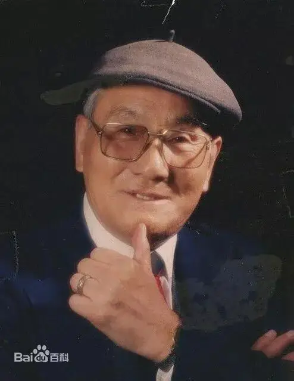
△于占元，1905年生于北京，为京剧名武生，1940年代名噪上海，后因大陆政治环境恶化南迁至香港，1960年代开办中国戏剧研究学院，桃李满门，培养了七小福（成龙、元彪、元奎、元华、元武、元泰）、袁和平、元秋、林正英，可以说他培养了香港一大半的动作演员。
49年新中国成立后，大批香港电影人才兴奋北上，怀着报国梦投身新中国电影事业，其中很多人最终却倒在了那可怕的十年里，这些悲壮的故事让我们感动。
78年改革开放后，港人并没有因为曾经折戟大陆而对我们望而却步，是他们最先带着资本和人才投身大陆，将我们曾经失丧的中国电影火种再次点燃。
今天，22年后，细路祥长大了，他可能此刻就站在香港的街头，他也许又在悲愤地唱着“只有天知道我的痛苦”。
希望我们能够聆听他们的声音，因为他是和我们一样的中国人，是一样曾经艰苦过的同胞，是我们不完美的家人，是我们最爱的细路祥。
虎毒不食子！对待家人，我们要温柔。
END-
相关推荐
▼
（点击文字即可获取全文）
真诚的黑暗远胜于浮夸的光明
这里没有挑逗你眼目情欲的小鲜肉
也没有挑动你肉体情欲的段子
更没有膨胀你今生骄傲的鸡血
我们只在乎那些最质朴真诚的作品
在那里我们才能恢复真正的想象力
我们也坚信这才是我们真正需要的

ID:Six_hundred_hits
长按二维码，一键关注
【六百击】
电影评论
尽情分享朋友圈

微信二维码打赏通道